之前写的文章《从第一代 iPhone 细数到 iPhone 12，iPhone 屏幕尺寸进化历程背后的 app 设计哲学》吸引了众多对 iPhone 屏幕尺寸或者 对 app 适配感兴趣的读者，在文章发布的各个渠道，特别是在少数派引起了一番热烈的讨论。文章从设计、开发等多个角度讲述了 iPhone 屏幕尺寸进化历程背后的 app 设计哲学，希望读者能够从我梳理的历史脉络和总结的进化逻辑中获得启发。同时文章也顺势推测了未来 iPhone 特别是 iPhone 12 系列会出现的一些变化，这部分虽不是文章重点，但当时处于在 iPhone 12 即将发布的时间点，自然也引起了众多读者的兴趣。
如今，iPhone 12 、iPhone 12 Pro 系列正式发布，屏幕参数尘埃落定。对比之前文章对 iPhone 12 屏幕参数较为保守的推测，真正的 iPhone 12 屏幕参数变化可谓十分激进。本文就作为之前文章的后续，基于之前文章所讲的 iPhone 屏幕尺寸的进化逻辑，来复盘一下 iPhone 12 的屏幕参数到底是如何变化的，对于普通用户在 iPhone 12 上使用 app 又有什么影响。
如果你还没有阅读过之前的文章，强烈推荐你先阅读，否则本文中的提到到的一些概念你可能会云里雾里😜

目录
iPhone 12 系列屏幕的变化
iPhone 12 系列包括 6.1 寸 iPhone 12 机型和 5.4 寸 iPhone 12 mini 机型，全部配备 OLED 屏幕。
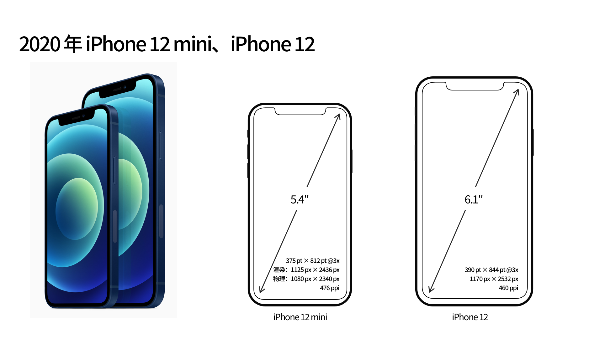
6.1 寸 iPhone 12
6.1 寸 iPhone 12 的屏幕分辨率为 1170px × 2532px，PPI 为 460，与 6.1 寸 iPhone 11 的屏幕分辨率（828px × 1792px）并不相同。在之前文章也有讲到过，虽然是相同尺寸，但屏幕由 LCD 材质换为 OLED 材质，由于成像原理的不同，要想保持同样的清晰度观感，分辨率必须提升。
6.1 寸 iPhone 12 的逻辑分辨率为 390pt × 844pt，比例因子为 @3x。Apple 为了保证在屏幕尺寸稍有变大的情况下，PPI 不降低，没有妥协继续使用 375pt 的逻辑分辨率宽度，而是启用了全新的逻辑分辨率宽度「390pt」，仅仅增加了 15pt。由逻辑分辨率宽度为 375pt × 812pt 的 5.8 寸 iPhone 11 Pro 进化到逻辑分辨率宽度为 390pt × 844pt 的 6.1 寸 iPhone 12，两者的宽高比例仍然保持相同，所以其变化逻辑仍然采用了之前文章总结的「等比放大」方法。
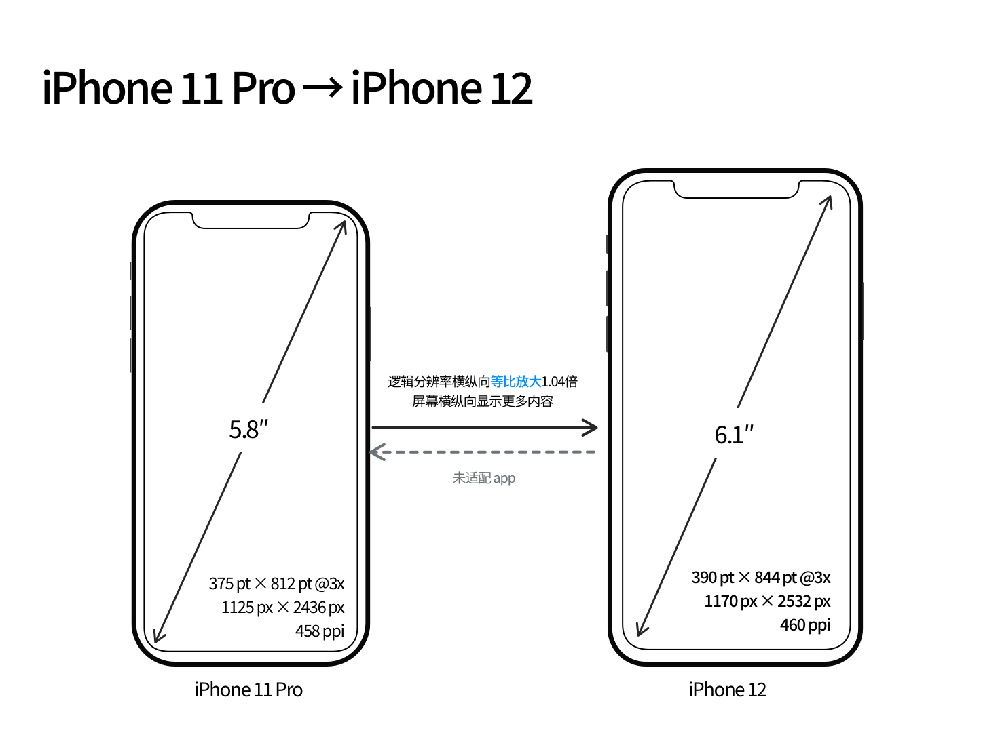
既然出现了全新的逻辑分辨率宽度，那 app 要完美运行在新的机型中就需要进行适配。没有适配新机型的 app 将以 375pt × 812pt@3x（同 5.8 寸 iPhone 11 Pro）的样式放大显示在 iPhone 12 上，相当于把图像放大了 1.04 倍，相比已经适配的 app 看上去会有些模糊（具体观感真机上手后再来补充）。App 要想适配新机型，至少需要通过 Xcode 12.1 及以上版本编译 app，并根据实际情况调整适配 app 布局。
适配的速度就要看各位开发者了，比如下图中的「我的天气」app 在 iPhone 12 发售前就已经完成了对 iPhone 12 系列的适配显示。
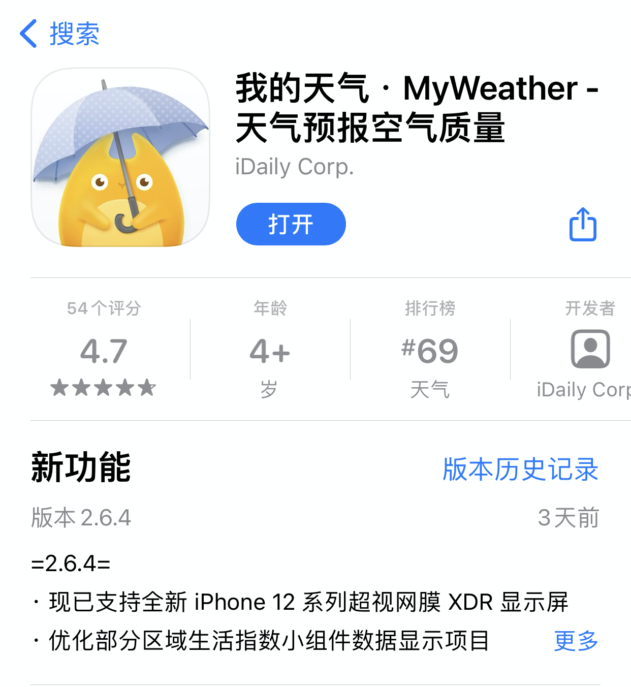
5.4 寸 iPhone 12 mini
5.4 寸 iPhone 12 mini 的屏幕分辨率为 1080px × 2340px，PPI 为 476，清晰度位列 iPhone 12 系列第一名。
由 iPhone 12 mini 的屏幕分辨率除以比例因子 @3x 得到逻辑分辨率 360pt × 780pt，很多人自然而然地就会以为这就是 iPhone 12 mini 的逻辑分辨率。然而通过已经发布的 Xcode 12.1 GM 版本的模拟器可以查到 iPhone 12 mini 的渲染分辨率（截图的大小）实际为「1125px × 2436px」，比物理分辨率（屏幕的物理参数）放大了 1.04 倍。同当年的 iPhone 6 Plus 一样，Apple 再次使用了一样的变化手法。
1125px × 2436px 的渲染分辨率对应的逻辑分辨率为 375pt × 812pt@3x，正是之前 5.8 寸 iPhone 11 Pro 的逻辑分辨率，这样 app 想完美运行在 iPhone 12 mini 上就无需再进行额外的适配工作。但由于像素不是点对点显示的，显示图像可能会有不锐利的问题，但由于其高 PPI 的存在，这个感知不会明显。
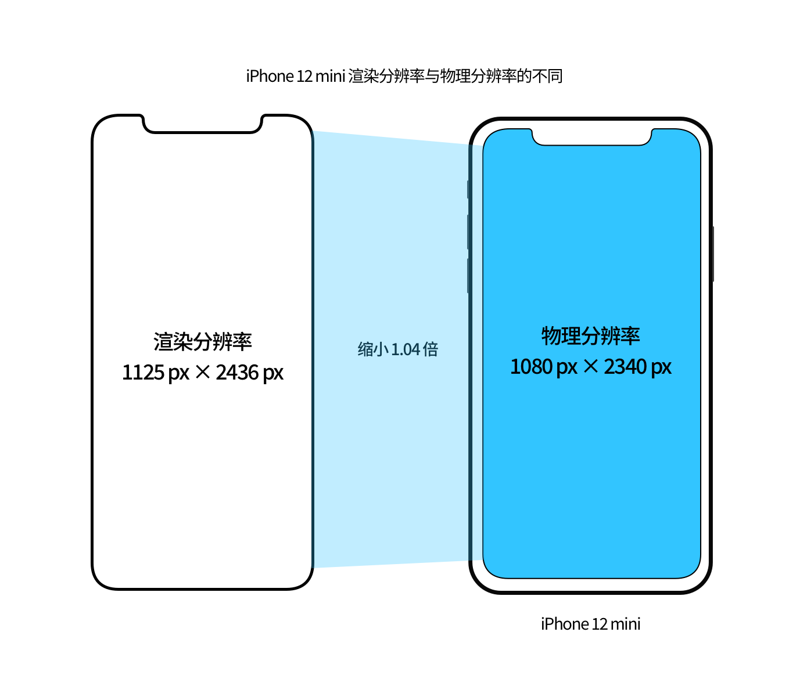
iPhone 12 Pro 系列屏幕的变化
iPhone 12 Pro 系列包括 6.1 寸 iPhone 12 Pro 机型和 6.5 寸 iPhone 12 Pro Max 机型。
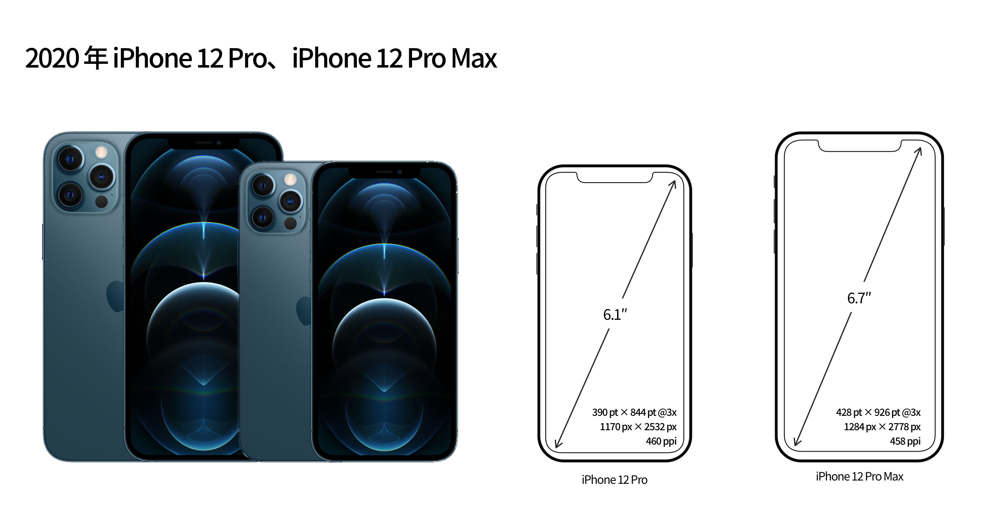
6.1 寸 iPhone 12 Pro
6.1 寸 iPhone 12 Pro 与 6.1 寸 iPhone 12 的屏幕参数完全相同，屏幕分辨率为 1170px × 2532px，PPI 为 460，逻辑分辨率为 390pt × 844pt，比例因子为 @3x。
对于 app 适配 iPhone 12 Pro 的逻辑也与 iPhone 12 完全相同，在此不再赘述。
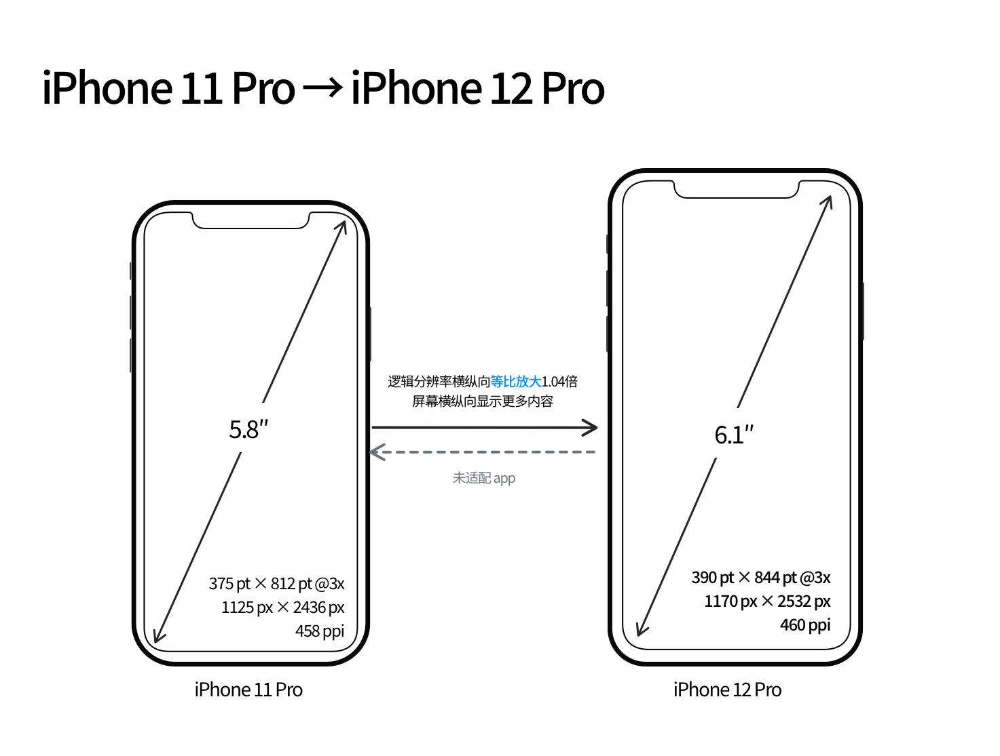
6.7 寸 iPhone 12 Pro Max
6.7 寸 iPhone 12 Pro Max 的屏幕分辨率为 1284px × 2778px，PPI 为 458。
6.7 寸 iPhone 12 Pro Max 的逻辑分辨率为 428pt × 926pt，比例因子为 @3x。同样地，Apple 为了保证在屏幕尺寸稍有变大的情况下，PPI 不降低，没有妥协继续使用 414pt 的逻辑分辨率宽度，而是启用了全新的逻辑分辨率宽度「428pt」，仅仅增加了 14pt。由逻辑分辨率宽度为 414pt × 896pt 的 6.5 寸 iPhone 11 Pro Max 进化到逻辑分辨率宽度为 428pt × 926pt 的 6.7 寸 iPhone 12 Pro Max，两者的宽高比例仍然保持相同，所以其变化逻辑仍然采用了之前文章总结的「等比放大」方法。
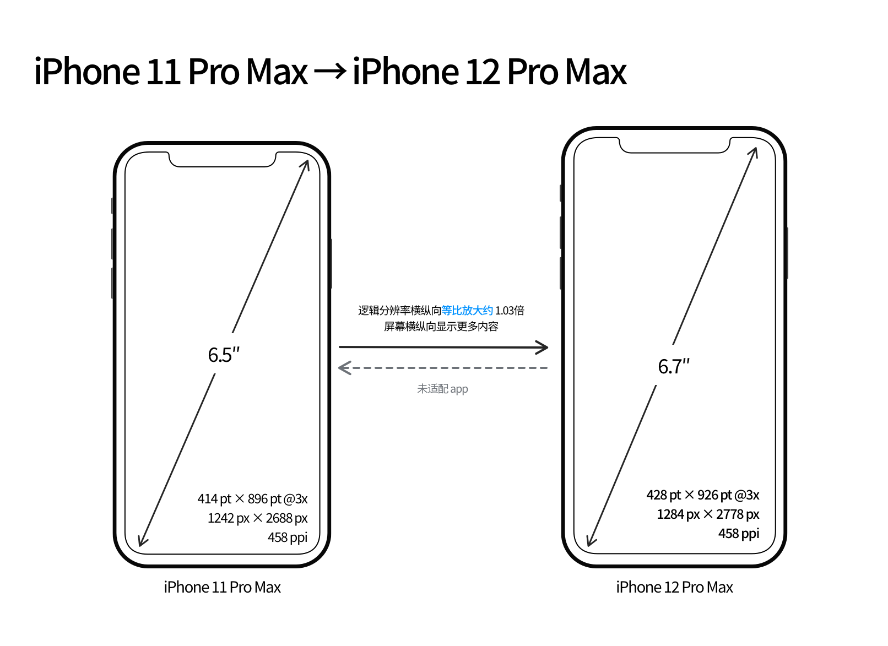
对于 app 适配也是一样，app 要完美运行在新的机型中就需要进行适配。没有适配新机型的 app 将以 414pt × 896pt@3x（同 6.5 寸 iPhone 11 Pro Max）的样式放大显示在 iPhone 12 Pro Max 上，相当于把图像放大了 1.03 倍，相比已经适配的 app 看上去会有些模糊（具体观感真机上手后再来补充）。App 要想适配新机型，至少需要通过 Xcode 12.1 及以上版本编译 app，并根据实际情况调整适配 app 布局。
放大显示功能
在之前文章中有讲到目前大部分的 iPhone 机型都配备了放大显示功能，关于放大显示最重要的一点就是，其实质是将高一级的逻辑分辨率降级到同一比例的低一级的逻辑分辨率。
在 iOS 14 Beta 版本中开始出现了 5.8 寸 iPhone 11 Pro（ 375pt × 812pt@3x）的放大显示功能，其逻辑分辨率为 320pt × 693pt@3x，当时的推测是这很可能是 5.4 寸 iPhone 12 mini 的真正分辨率。然而现实情况是这只是 Apple 虚构的一个机型分辨率，至少在现在这个时间点，这个机型是不存在的，当我确定这个结论时也是十分诧异。
那这个虚构的逻辑分辨率又用在了哪些地方呢？具体来看：
在有了这个虚构的逻辑分辨率 320pt × 693pt 之后，5.8 寸的 iPhone 11 Pro、iPhone iPhone Xs、iPhone X 机型自然就支持了放大显示功能。
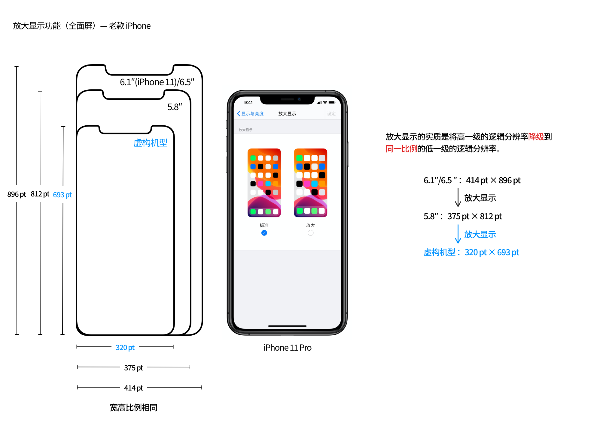
但由于这个 320pt 的全面屏逻辑分辨率宽度不存在于任何一个现有的机型，要想 app 正常运行在这个逻辑分辨率之下，也得需要进行适配。如果不进行适配，将会以 iPhone 5s 的大小显示，也即上下有黑边。
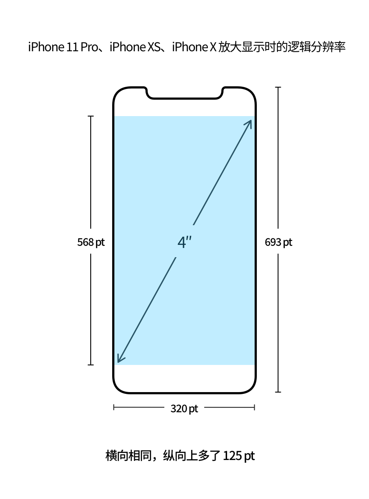
再来看全新的 iPhone 12 系列的放大显示，6.7 寸的 iPhone 12 Pro Max 开启放大显示后，会降级到 375pt 宽度，也即 iPhone 11 Pro 大小；6.1 寸 iPhone 12/iPhone 12 Pro 、5.4 寸 iPhone 12 mini 开启放大显示后，都会降级到 320pt 宽度，也即前面提到的虚构机型的大小，如果 app 没有适配全面屏的 320pt 逻辑分辨率宽度，同样会出现上下有黑边的情况。
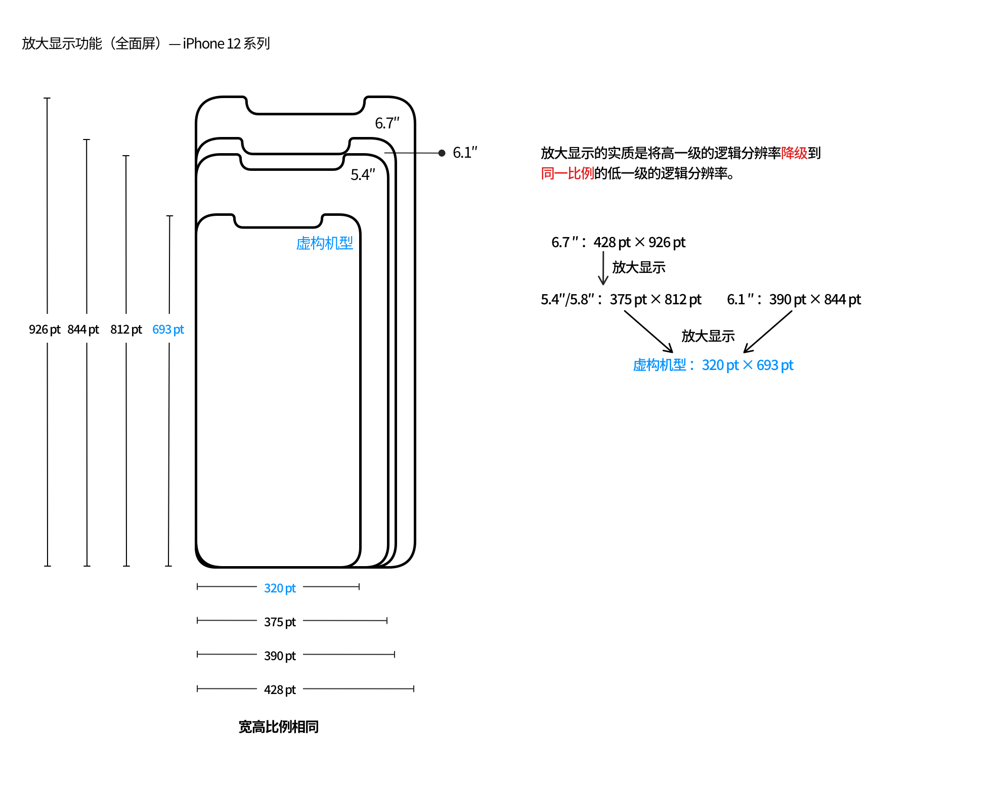
320pt（全面屏）这个新增的逻辑分辨率宽度隐藏在放大显示功能背后，可能更不会引起 app 开发者的注意，适配的进度可能会更慢。
内容显示数量
至此，iPhone 12 系列在标准显示模式下新增了 390pt（iPhone 12/iPhone 12 Pro）、428pt（iPhone 12 Pro Max）两种新的逻辑分辨率宽度，在放大显示模式下新增了 320pt（iPhone 12/iPhone 12 Pro、iPhone 12 mini） 一种新的逻辑分辨率宽度。总共增加了 390pt、428pt、320pt（全面屏） 三种逻辑分辨率宽度。
逻辑分辨率的大小会决定屏幕上内容显示数量的多少。针对于不同逻辑分辨率的屏幕，下图对比了其内容显示数量。几个值得特别注意的点：
- 之前的 6.1 寸 iPhone 11 是 414pt 宽度，同 6.5 寸 iPhone 11 Pro Max 一样，而 6.1 寸的 iPhone 12/iPhone 12 Pro 减少到了 390pt 宽度，相比于以前，横纵向显示数量变少了，但比例因子由 @2x 变为 @3x，总体上 PPI 也即清晰度大幅提升了。对于从 iPhone Xʀ、iPhone 11 更新到 iPhone 12、iPhone 12 Pro 的用户在初期可能会不适应。
- 从 375pt 增加到 390pt，从 414pt 增加到 428pt，虽然横纵向的确可以显示更多的内容，但对比发现后，其实差异不会很明显。
- iPhone 12/iPhone 12 Pro、iPhone 12 mini 的放大显示都是 320pt，很多 app 可能都没有适配，而且整体承载内容数量较少较挤，并不适合作为日常使用。
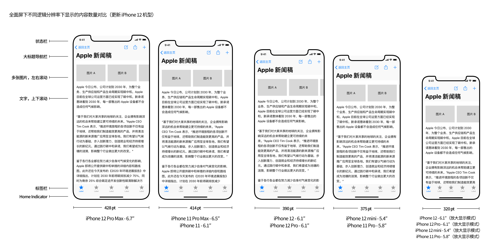
再附一张台湾 iOS 开发者 @ethanhuang13 在 Xcode 模拟器使用不同机型显示同一个网站上的内容对比情况。
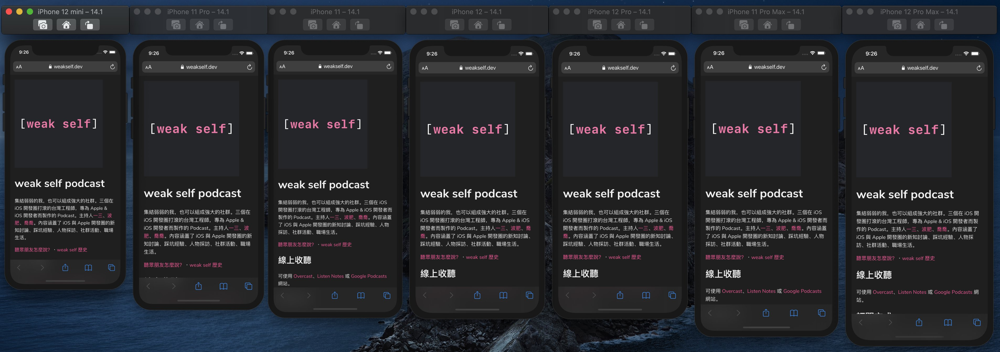
Size Class
Size Class 尺寸等级同样是之前文章中所提到的 iPhone 尺寸变化过程中的一个重要概念。
全新的 iPhone 12 系列在竖屏下，毫无悬念，依然同其他 iPhone 一样是「compact width，regular height」。但在横屏下，有几个需要注意的点：
- 6.1 寸的 iPhone 12/iPhone 12 Pro 系列由于其逻辑分辨率比 6.1 寸 iPhone 11 小一些，所以其横屏的 Size Class 是 「compact width，compact height」，与 iPhone 12 mini、iPhone 11 一样。因此在如「信息」这样支持左右分栏布局样式的 app 上显示时就只能显示某个联系人的短信内容，如下图；
- 6.7 寸的 iPhone 12 Pro Max 其横屏的 Size Class 自然是 「regular width，compact height」，与 iPhone 11、iPhone 11 Pro Max 一样，在「信息」app 中可以分左右两边显示短信列表和具体的短信内容，如下图。
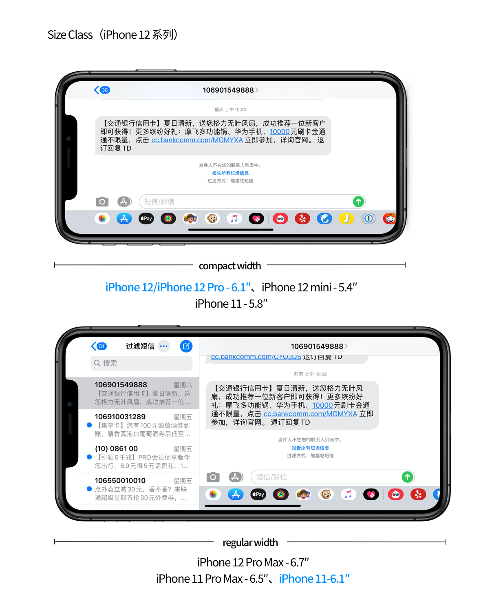
总结
纵观 iPhone 12 全系列的屏幕分辨率变化，Apple 为了保持 PPI 也即屏幕清晰度只增不减，不得不在之前已有的逻辑分辨率宽度上同样利用「等比放大」的方法小幅放大了一点形成了两个新的逻辑分辨率宽度：390pt、428pt，同时为了让 iPhone X、iPhone iPhone Xs、iPhone 11 Pro、iPhone 12、iPhone 12 Pro、iPhone 12 mini 这些机型都具备「放大显示」功能，暗暗增加了 320pt（全面屏）这个新的逻辑分辨率宽度。整体上可谓十分激进的进化，虽然显示效果达到了最佳，但对于众多开发者和第一批尝鲜的用户来说，不得不有一段时间的阵痛期。这或许也在某些层面体现了 Apple 的偏执吧。
而 iPhone 12 mini 再次使用了渲染分辨率与物理分辨率不同的操作方法，也有些许延续传统的感觉。
至此到 2020 年的现在这个时间点，iPhone 的逻辑分辨率宽度进化到了 320pt（非全面屏、全面屏）、375pt（非全面屏、全面屏）、414pt（非全面屏、全面屏）、390pt（全面屏）、428pt（全面屏）八小种、五大种。下图用图示的方式展示了从 2007 年到 2020 年 iPhone 屏幕尺寸进化的历程，包括尺寸、物理分辨率、渲染分辨率、逻辑分辨率、PPI、放大显示功能、进化逻辑等，具体可点击查看大图。
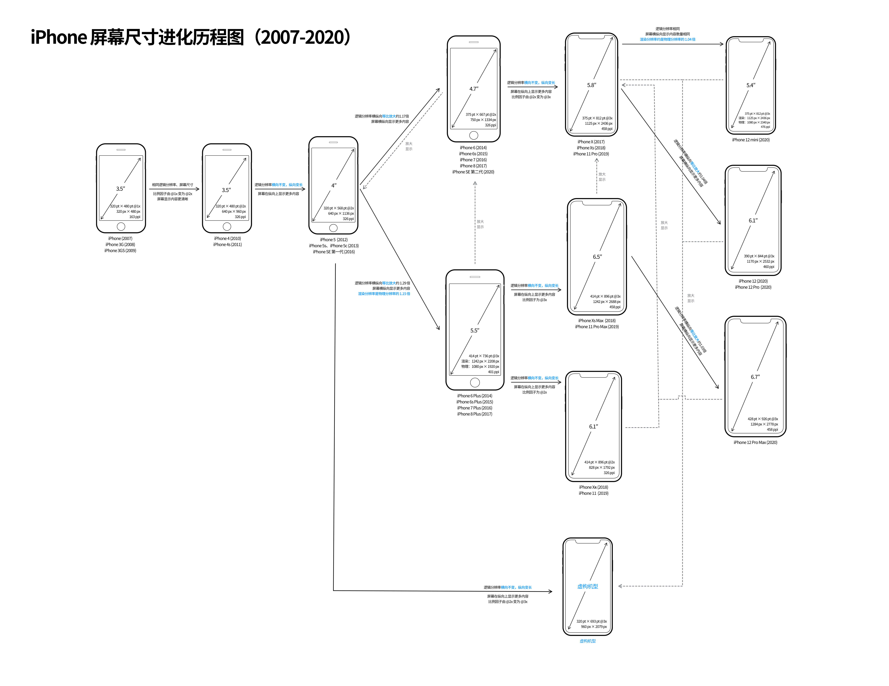
iPhone 屏幕逻辑分辨率激进变化的背景下，或许 Apple 已释放出了足够的信号：未来的屏幕大小不再是一成不变的，app 的显示区域也是可大可小的，针对于不同设备尺寸适配 app 的方法已经过时，循着 Apple 给出的方法和工具，让 app 自由地在屏幕上呈现，或许才能找到未来的路。
参考文章
- How iOS Apps Adapt to the various iPhone 12 Screen Sizes | by Geoff Hackworth
- Michael Tsai - Blog - iPhone 12 and iPhone 12 Pro
- 台湾 iOS 开发者 @ethanhuang13 的推文
如果你觉得这篇文章对你有所帮助，欢迎请我喝杯咖啡，感谢你的支持😁